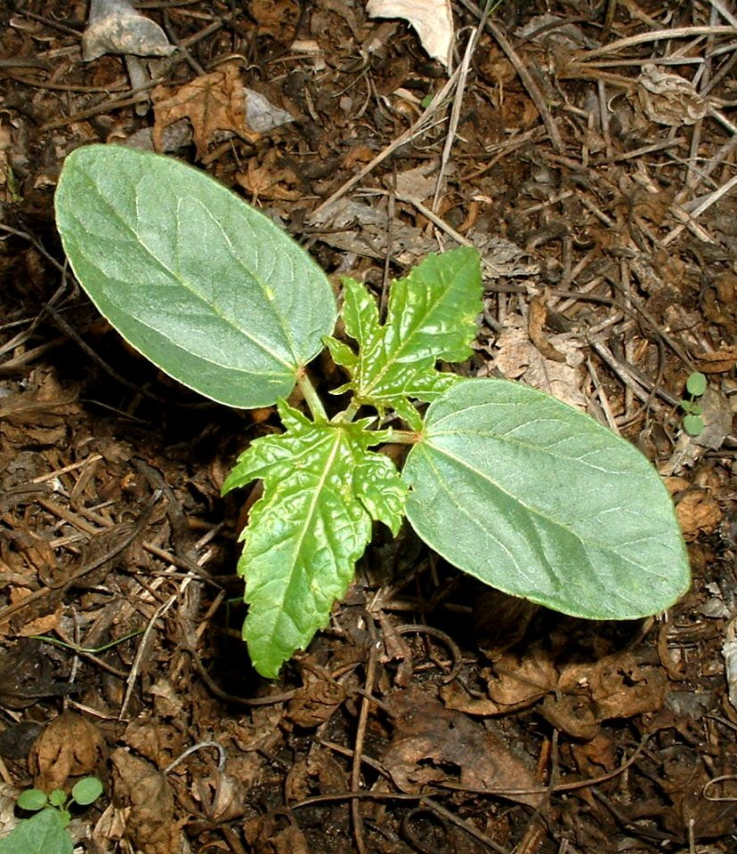

Bienvenue
Sur Notre Site Pour savoir Plus sur les planètes
Les "mauvaises herbes" sont des plantes considérées comme indésirables dans un contexte donné, souvent dans les jardins, les pelouses, les cultures agricoles ou même dans les espaces naturels aménagés. Le terme "mauvaises herbes" est généralement subjectif et relatif à l'usage humain et à la gestion des terres.
Une adventice est une plante dont la croissance au jardin est considérée comme indésirable. D’une manière plus populaire, on parlerait de ‘mauvaises herbes’. Il peut donc s’agir de plantes endémiques, locales ou bien introduites par l’homme et dont le contrôle n’est plus possible à l’échelle nationale.
Les monocotylédones sont une classe de plantes à fleurs (angiospermes) caractérisées par la présence d'une seule feuille embryonnaire, ou cotylédon, dans la graine. Elles se distinguent des dicotylédones, qui possèdent deux cotylédons.
Les dicotylédones, ou dicots, sont une classe de plantes à fleurs (angiospermes) caractérisées par la présence de deux feuilles embryonnaires, ou cotylédons, dans la graine. Elles se distinguent des monocotylédones, qui n'ont qu'un seul cotylédon.
